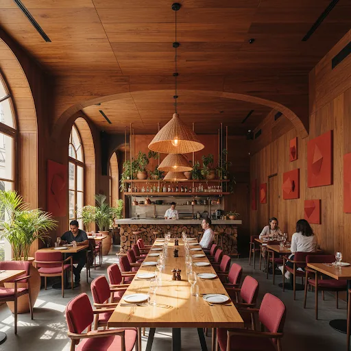
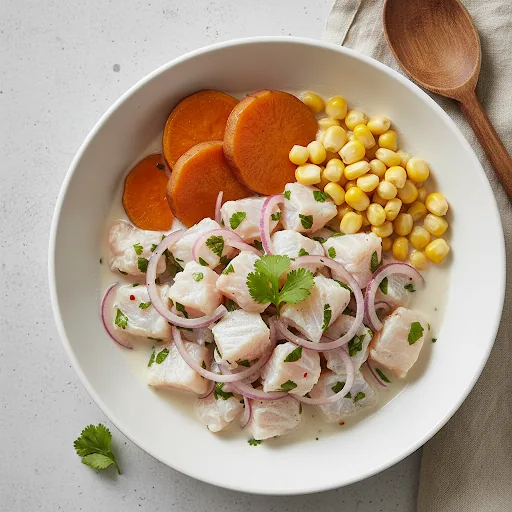
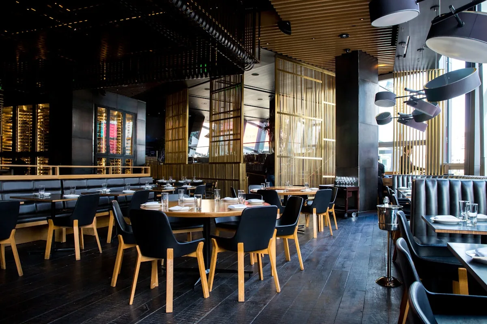

Plato bandera
Ceviche Clásico
Pesca del día, leche de tigre al ají limo, camote glaseado y maíz chulpi tostado.
Alta cocina peruana
Cocina de raíz limeña con técnica de vanguardia, montada como una pieza editorial. Ingrediente, fuego y memoria puestos en escena sin adornos vacíos.


Chef's Choice
Ceviche de pesca viva
Leche de tigre de ají limo, choclo tierno y aceite de culantro.

Ritual de sala
Servicio cercano, cocina precisa.
Nuestra filosofía
Ají Nomás trabaja el producto peruano como una materia viva. Nada de decoración gratuita: el color del rocoto, la acidez del limón y el humo de la brasa son la narrativa.
La carta cruza costa, sierra y selva con montaje contemporáneo, ritmo pausado y una atmósfera que se siente más galería que plantilla de restaurante.
Origen
24
productores locales forman parte de la mise en place semanal.
Experiencia
7 tiempos
de degustación con maridajes diseñados para la casa.
Experiencia guiada
01
Apertura fresca
Crudos, cítricos y temperatura precisa para despertar el paladar.
02
Brasa y profundidad
Wok, parrilla y fondos de larga cocción para construir peso y aroma.
03
Final aromático
Postres de memoria limeña con textura ligera y final limpio.
Asegura tu lugar
Reservas íntimas, mesas de celebración y eventos privados con menú curado. Si vienes en grupo, la casa arma una secuencia especial para la mesa.
Dirección
Av. Mariscal La Mar 1234
Miraflores, Lima
Contacto
+51 999 999 999
contacto@ajinomas.pe